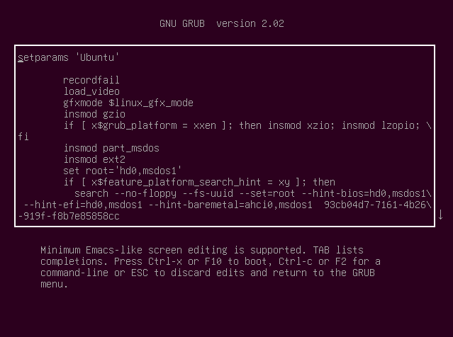
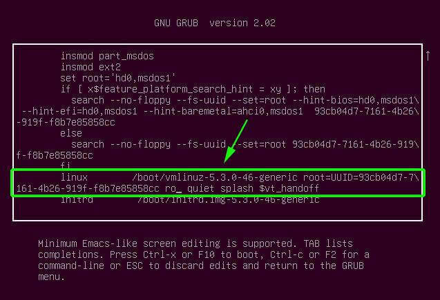
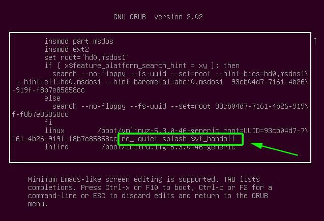
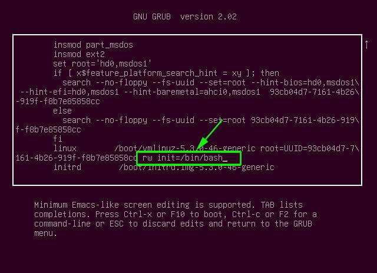

ubuntu recovery or root password reset
按 e 键来编辑 GRUB 参数，将会显示如下的界面：

往下滚动，找到以 linux /boot/vmlinuz 开始的一行，已在下图中标记出来：

找到一段内容：ro quiet splash $vt_handoff

将 ro quiet splash $vt_handoff 替换成rw init=/bin/bash ，目的是给root文件系统设置读和写的命令：

然后，按Ctrl + X 或F10 来重启系统，你的系统会进入 root shell 界面重置密码即可
mount -o remount,rw /